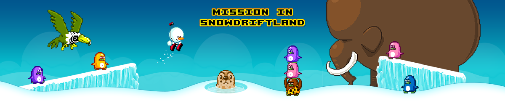

I make things. A lot of them.
You can check all my stuff below:
browseq (or "browse?") is a browser made for the htmlhelp tool included in Windows. It's the smallest browser ever I guess (11 kb). It only runs pages from 2010 or earlier.
Don't like the new Firefox design? Well, this is for you. This helps you download an old Firefox version. All downloads are made from the official Mozilla FTP server.
Revive your memories with this once claimed lost game. You'll need Flash Player installed, as there are some minor bugs with Ruffle. I downloaded the files from the Internet Archive, made some changes to the webpage, and put them here, for anyone who wants to play.